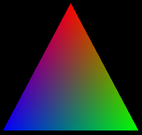

We are ready to start working towards our first WebGL programs. This section begins with a few more details about the WebGL graphics context, followed by a short introduction to GLSL, the programming language for WebGL shaders. With that in hand, we can turn to the standard first example: the RGB color triangle.
We saw in Subsection 6.1.1 that a WebGL graphics context is created by the function canvas.getContext, where canvas is a reference to the <canvas> element where the graphics context will draw. This function takes an optional second parameter that can be used to set the value of certain options in the graphics context. The second parameter is only needed if you want to give a non-default value to at least one of the options. The parameter is a JavaScript object whose properties are the names of the options. Here is an example of context creation with options:
let options = {
alpha: false,
depth: false
};
gl = canvas.getContext( "webgl", options ); // (or "webgl2")
All of the options are boolean-valued. I will discuss the most useful ones here:
alpha — determines whether the drawing buffer has an alpha component. This is the alpha component for the image canvas as a whole. If there is an alpha component, then it is possible for pixels in the canvas to be transparent or translucent, letting the background (on the web page behind the canvas) show through. The default value is true. It is safe to set the value to false, if you want the canvas to be fully opaque. Setting it to false does not stop you from doing alpha blending of the drawing color with the image color; the RGB color components can still be computed by blending. However, setting the value to false is only necessary if your program outputs pixels with alpha component less than 1.0, and you don't want your image to blend with the background of the canvas. (Note however that a graphics context with an alpha component might be handled more efficiently, because web pages use RGBA colors for their display.)
depth — determines whether a depth buffer is allocated. The default value is true. You only need a depth buffer if you enable the depth test. The depth buffer is generally not needed for 2D graphics. If your application doesn't need it, eliminating the depth buffer can save some memory in the GPU.
antialias — is used to request that antialiasing be applied to the image. A WebGL implementation might ignore the request, for example if antialiasing is not supported by the GPU. The default value is true. Antialiasing can improve the quality of an image, but it can also significantly increase the computation time.
preserveDrawingBuffer — determines whether the contents of the drawing buffer are discarded after the image has been copied to the web page. The default value is false. The drawing buffer is internal to WebGL. Its contents only become visible on the screen when the web browser copies the image onto the web page. The default value for preserveDrawingBuffer means that once that happens, WebGL can discard its own copy of the image, which allows the GPU to free up resources for other operations. As long as your rendering functions completely redraw the image every time they called, the default is fine. You should set the value to true only if you need to keep the image around so that you can add to it incrementally over time.
The next section will cover GLSL more thoroughly. But you will need to know something about the language to understand the examples in this section. This section discusses GLSL ES 1.00 only, but remember that that language can be used with both WebGL 1.0 and WebGL 2.0.
A vertex or fragment shader can contain global variable declarations, type definitions, and function definitions. One of the functions must be main(), which is the entry point for the shader; that is, it is the function that is called by the GPU to process the vertex or fragment. The main() routine takes no parameters and does not return a value, so it takes the form
void main() {
.
.
.
}
(Alternatively, it can be declared as void main(void).)
Control structures are limited. If statements take the same form as in C or Java. But some limitations are placed on the for loop syntax, and while and do...while loops are not allowed. Data structures include arrays and structs, again with some limitations. We will cover all this in some detail in the next section.
GLSL's strength lies in its built-in data types and functions for working with vectors and matrices. In this section, we will only need the data types float, vec2, vec3, and vec4. These types represent, respectively, 1, 2, 3, or 4 floating point numbers. Variable declarations are similar to C. Some examples are:
attribute vec3 a_coords; // (only in vertex shader) vec3 rgb; float width, height; uniform vec2 u_size; varying vec4 v_color;
Attribute, uniform, and varying variables were discussed in Section 6.1. They are used for communication between JavaScript and the shader program and between the vertex shader and the fragment shader. In the above examples, I used the prefixes "a_", "u_", and "v_" in the names of the variables, but that is not required.
It is common to construct a value for a vector from individual numbers or from shorter vectors. GLSL has a flexible notation for doing this. Using the variables declared in the above examples, we can write
rgb = vec3( 1.0, 0.7, 0.0 ); // construct a vec3 from constants v_color = vec4( rgb, 1.0 ); // construct a vec4 from a vec3 and a constant gl_Position = vec4( a_coords, 0.0, 1.0 ); // vec4 from a vec2 and 2 constants
In the last assignment statement, gl_Position is the special built-in variable that is used in the vertex shader to give the coordinates of the vertex. gl_Position is of type vec4, requiring four numbers, because the coordinates are specified as homogeneous coordinates (Subsection 3.5.3). The special variable gl_FragCoord in the fragment shader is also a vec4, giving the coordinates of the pixel as homogeneous coordinates. And gl_FragColor is a vec4, giving the four RGBA color components for the pixel.
A vertex shader needs, at a minimum, an attribute to give the coordinates of the vertex. For 2D drawing, it's natural for that attribute to be of type vec2. If we assume that the values for the attribute are already expressed in clip coordinates, then the complete source code for the vertex shader could be as simple as:
attribute vec2 coords;
void main() {
gl_Position = vec4( coords, 0.0, 1.0 );
}
For a corresponding minimal fragment shader, we might simply draw everything in yellow.
precision mediump float;
void main() {
gl_FragColor = vec4( 1.0, 1.0, 0.0, 1.0 );
}
The strange first line in this fragment shader has not been explained, but something like it is required. It will be explained in the next section.
We are ready to look at our first full WebGL example, which will draw the usual RGB color triangle, as shown here:

The source code can be found in webgl/webgl-rgb-triangle.html. The code includes the usual init() and createProgram() functions as discussed in Subsection 6.1.1 and Subsection 6.1.2, except that I have turned off the "alpha" and "depth" options in the WebGL context. I won't discuss those two functions further.
The example uses an attribute of type vec2 to specify the coordinates of the vertices of the triangle. Coordinates range from −1 to 1 in the default WebGL coordinate system. For the triangle, the vertex coordinates that I use are in that range, so no coordinate transformation is needed. Since the color is different at each vertex of the triangle, the vertex color is also an attribute. I use an attribute of type vec3 for the vertex colors, since no alpha component is needed in this program.
The color of interior pixels in the triangle is interpolated from the colors at the vertices. The interpolation means that we need a varying variable to represent the color. A varying variable is assigned a value in the vertex shader, and its value is used in the fragment shader.
It looks like we need two color variables: an attribute and a varying variable. We can't use the same variable for both purposes. The attribute carries the vertex color from JavaScript into the vertex shader; the varying variable carries the color from the vertex shader to the fragment shader. In this case, the color value going out of the vertex shader is the same as the value coming in, so the shader just has to copy the value from the color attribute to the varying variable. This pattern is actually fairly common. Here is the vertex shader:
attribute vec2 a_coords;
attribute vec3 a_color;
varying vec3 v_color;
void main() {
gl_Position = vec4(a_coords, 0.0, 1.0);
v_color = a_color;
}
The fragment shader only has to copy the incoming color value from the varying variable into gl_FragColor, which specifies the outgoing color for the fragment:
precision mediump float;
varying vec3 v_color;
void main() {
gl_FragColor = vec4(v_color, 1.0);
}
In order to compile the shader program, the source code for the shaders has to be in JavaScript strings. In this case, I construct the strings by concatenating constant strings representing the individual lines of code. For example, the fragment shader source code is included in the JavaScript script as the global variable
const fragmentShaderSource =
"precision mediump float;\n" +
"varying vec3 v_color;\n" +
"void main() {\n" +
" gl_FragColor = vec4(v_color, 1.0);\n" +
"}\n";
The line feed character, "\n", at the end of each line is not required, but it allows the GLSL compiler to include a meaningful line number in any error message that it generates.
Also on the JavaScript side, we need a global variable for the WebGL context. And we need to provide values for the attribute variables. The rather complicated process was discussed in Subsection 6.1.5. We need global variables to represent the location of each attribute in the shader program, and to represent the VBOs that will hold the attribute values. I use the variables
let gl; // The WebGL graphics context. let attributeCoords; // Location of the attribute named "a_coords". let bufferCoords; // A vertex buffer object to hold the values for a_coords. let attributeColor; // Location of the attribute named "a_color". let bufferColor; // A vertex buffer object to hold the values for a_color.
The graphics context is created in the init() function. The other variables are initialized in a function initGL() that is called from init(). That function also creates the shader program, using the createProgram() function from Subsection 6.1.2:
function initGL() {
let prog = createProgram( gl, vertexShaderSource, fragmentShaderSource );
gl.useProgram(prog);
attributeCoords = gl.getAttribLocation(prog, "a_coords");
bufferCoords = gl.createBuffer();
attributeColor = gl.getAttribLocation(prog, "a_color");
bufferColor = gl.createBuffer();
}
To set up the values for an attribute, we need six different JavaScript commands (and more if you count placing the attribute values into a typed array). The commands getAttribLocation and createBuffer will most likely be called just once for each attribute, so I put them in my initialization routine. The other four commands are in draw(), the function that draws the image. In this program, draw() is called just once, so the division of the code into two functions is not really necessary, but in general, a draw function is meant to be called many times. (It would be a particularly bad idea to create a new VBO every time draw() is called!)
Before drawing the triangle, the draw() function fills the canvas with a black background. This is done using the WebGL functions gl.clearColor and gl.clear, which have exactly the same functionality as the OpenGL 1.1 functions glClearColor and glClear. Here is the code:
function draw() {
gl.clearColor(0,0,0,1); // specify the color to be used for clearing
gl.clear(gl.COLOR_BUFFER_BIT); // clear the canvas (to black)
/* Set up values for the "a_coords" attribute */
let coords = new Float32Array( [ -0.9,-0.8, 0.9,-0.8, 0,0.9 ] );
gl.bindBuffer(gl.ARRAY_BUFFER, bufferCoords);
gl.bufferData(gl.ARRAY_BUFFER, coords, gl.STREAM_DRAW);
gl.vertexAttribPointer(attributeCoords, 2, gl.FLOAT, false, 0, 0);
gl.enableVertexAttribArray(attributeCoords);
/* Set up values for the "a_color" attribute */
let color = new Float32Array( [ 0,0,1, 0,1,0, 1,0,0 ] );
gl.bindBuffer(gl.ARRAY_BUFFER, bufferColor);
gl.bufferData(gl.ARRAY_BUFFER, color, gl.STREAM_DRAW);
gl.vertexAttribPointer(attributeColor, 3, gl.FLOAT, false, 0, 0);
gl.enableVertexAttribArray(attributeColor);
/* Draw the triangle. */
gl.drawArrays(gl.TRIANGLES, 0, 3);
}
In this function, the variable coords contains values for the attribute named "a_coords" in the vertex shader. That attribute represents the x and y coordinates of the vertex. Since the attribute is of type vec2, two numbers are required for each vertex. The value for coords is created here with a Float32Array constructor that takes an ordinary JavaScript array as its parameter; the values from the JavaScript array are copied into the newly created typed array. Similarly, the variable color contains values for the "a_color" attribute in the vertex shader, with three numbers per vertex.
We have now accounted for all the pieces of the RGB triangle program. Read the complete source code to see how it fits together.
Our next example will introduce a few new features. The example is a simple interactive program where the user can place shapes in a canvas by clicking the canvas with the mouse. Properties of the shape are taken from a set of popup menus. The properties include the color and degree of transparency of the shape, as well as which of several possible shapes is drawn. The shape is centered at the point where the user clicks.
The sample program is webgl/shape-stamper.html. Here is a demo version of the program so you can see how it works.
In the RGB triangle example, color is an attribute, since a different color is assigned to each vertex of the triangle primitive. In the shape-stamper program, all vertices, and in fact all pixels, in a primitive have the same color. That means that color can be a uniform variable. The example also allows transparency, so colors need an alpha component as well as the RGB components. It was convenient in the program to treat the alpha and RGB components as separate quantities, so I represent them as two separate uniform variables in the shader program. The color and alpha uniforms are used in the fragment shader to assign the fragment's color. In fact, that's the only thing the fragment shader does, so the complete source code is as follows:
precision mediump float;
uniform vec3 u_color;
uniform float u_alpha;
void main() {
gl_FragColor = vec4(u_color, u_alpha);
}
To work with a uniform variable on the JavaScript side, we need to know its location in the shader program. The program gets the locations of the two uniform variables in the intiGL() function using the commands
uniformColor = gl.getUniformLocation(prog, "u_color"); uniformAlpha = gl.getUniformLocation(prog, "u_alpha");
The program has two popup menus that let the user select the color and alpha that are to be used for drawing a primitive. When a shape is drawn, the values from the menus determine the values of the uniforms:
let colorNumber = Number(document.getElementById("colorChoice").value);
let alpha = Number(document.getElementById("opacityChoice").value);
gl.uniform3fv( uniformColor, colorList[colorNumber] );
gl.uniform1f( uniformAlpha, alpha );
Values for uniform variables are set using the gl.uniform* family of functions. In this case, colorList[colorNumber] is an array of three numbers holding the RGB color components for the color, so the function gl.uniform3fv is used to set the value: The "3f" means that 3 floating point values are provided, and the "v" means that the three values are in an array. Note that three floating point values are required to match the type, vec3, of the uniform variable in the shader. The value of alpha is a single floating point number, so the corresponding uniform variable is set using gl.uniform1f.
In order for the alpha component of the color to have any effect, alpha blending must be enabled. This is done as part of initialization with the two commands
gl.enable( gl.BLEND ); gl.blendFunc( gl.SRC_ALPHA, gl.ONE_MINUS_SRC_ALPHA );
The first line enables use of the alpha component. The second tells how the alpha component is to be used. The "blendFunc" used here is appropriate for transparency in 2D. The same commands were used in Subsection 3.1.2 in OpenGL 1.1.
When the program starts, the user sees a blank white canvas. When the user clicks the canvas, a shape is added. When the user clicks again, a second shape is added—and the first shape better still be there! However, this is not the default behavior for WebGL!
When the user clicks the canvas, an event-handler function for the mousedown event is called. The shape is drawn in that function. When the function returns, WebGL tells the web browser that the image has been modified, and the web browser copies the new image to the screen. Once that happens, as discussed earlier in this section, the default behavior for WebGL is to discard the image. But this means that the second mouse click is drawing on a blank canvas, since the shape from the first mouse click has been erased.
To fix this problem, the preserveDrawingBuffer option in the WebGL graphics context must be set to true. The shape-stamper program creates the context with
let options = { // No need for alpha channel or depth buffer, but we
// need to preserve the image in the drawing buffer.
alpha: false,
depth: false,
preserveDrawingBuffer: true
};
gl = canvas.getContext("webgl", options);
Note that this program does not have a draw() function that redraws the entire image. All the drawing is done in the mouse-handling function, doMouseDown. Things could have been done differently. The program could have used a data structure to store information about the shapes that have been drawn. Clicking the canvas would add an item to the list, and the entire image would then be redrawn, including the new shape. In the actual program, however, the only record of what's in the image is the image itself. (In the terminology of Section 1.1, it is a painting program rather than a drawing program.)
WebGL uses a default coordinate system in which each of the coordinates ranges from −1 to 1. Of course, we would like to use a more convenient coordinate system, which means that we need to apply a coordinate transformation to transform the coordinates that we use into the default coordinate system. In the shape-stamper program, the natural coordinate system is pixel coordinates on the canvas. In the pixel coordinate system, the x-coordinate ranges from 0 at the left to canvas.width at the right, and y ranges from 0 at the top to canvas.height at the bottom. The equations for transforming pixel coordinates (x1,y1) to default coordinates (x2,y2) are
x2 = -1 + 2*( x1 / canvas.width ); y2 = 1 - 2*( y1 / canvas.height );
In WebGL, the coordinate transformation is usually applied in the vertex shader. In this case, to implement the transformation, the vertex shader just needs to know the width and height of the canvas. The program provides the width and height to the vertex shader as uniform variables. The original pixel coordinates of the vertex are input to the vertex shader as an attribute. The shader applies the coordinate transformation to compute the value of gl_Position, which must be expressed in the default coordinate system. Here is the vertex shader source code:
attribute vec2 a_coords; // pixel coordinates
uniform float u_width; // width of canvas
uniform float u_height; // height of canvas
void main() {
float x = -1.0 + 2.0*(a_coords.x / u_width);
float y = 1.0 - 2.0*(a_coords.y / u_height);
gl_Position = vec4(x, y, 0.0, 1.0);
}
Transformations can be much more complicated than this, especially in 3D, but the general pattern holds: Transformations are represented by uniform variables and are applied in the vertex shader. In general, transformations are implemented as matrices. We will see later that uniform variables can be matrices and that the shader language GLSL has good support for matrix operations.
In order to draw a shape, we need to store the pixel coordinates for that shape in a Float32Array; then, we have to load the values from that array into the buffer associated with the "a_coords" attribute; and finally, we must call gl.drawArrays to do the actual drawing. The coordinates for the shape can be computed based on what type of shape is being drawn and on the point where the user clicked. For example, the coordinate array for a circle is created by the following code, where x and y are the pixel coordinates for the point that was clicked:
coords = new Float32Array(64);
k = 0;
for (let i = 0; i < 32; i++) {
let angle = i/32 * 2*Math.PI;
coords[k++] = x + 50*Math.cos(angle); // x-coord of vertex i
coords[k++] = y + 50*Math.sin(angle); // y-coord of vertex i
}
The circle is approximated as a 32-sided regular polygon, with a radius of 50 pixels. Two coordinates are required for each vertex, so the length of the array is 64. The code for the other shapes is similar. Once the array has been created, the shape is drawn using
gl.bindBuffer(gl.ARRAY_BUFFER, bufferCoords); gl.bufferData(gl.ARRAY_BUFFER, coords, gl.STREAM_DRAW); gl.vertexAttribPointer(attributeCoords, 2, gl.FLOAT, false, 0, 0); gl.drawArrays(gl.TRIANGLE_FAN, 0, coords.length/2);
In the last line, coords.length/2 is the number of vertices in the shape, since the array holds two numbers per vertex. Note also that the last parameter to gl.bufferData is gl.STREAM_DRAW, which is appropriate when the data in the VBO will only be used once or a few times before being discarded.
Although the demo version of the sample program has the same functionality, I implemented shape drawing differently in the two versions. Notice that all circles in the program are the same; they are just in different locations. It should be possible to draw the circle in its own object coordinates, and then apply a modeling transformation to move the circle to its desired position in the scene. This is the approach that I take in the demo version of the program.
There are four kinds of shape: circles, squares, triangles, and stars. In the demo version, I create a separate VBO for each kind of shape. The VBO for a shape contains vertex coordinates for that shape in object coordinates, with the shape centered at (0,0). Since the object coordinates will never change, the VBO can be created once and for all as part of program initialization. For example, the VBO for the circle is created with
coords = new Float32Array(64);
let k = 0; // index into the coords array
for (let i = 0; i < 32; i++) {
let angle = i/32 * 2*Math.PI;
coords[k++] = 50*Math.cos(angle); // x-coord of vertex
coords[k++] = 50*Math.sin(angle); // y-coord of vertex
}
bufferCoordsCircle = gl.createBuffer();
gl.bindBuffer( gl.ARRAY_BUFFER, bufferCoordsCircle );
gl.bufferData(gl.ARRAY_BUFFER, coords, gl.STATIC_DRAW);
Note the use of gl.STATIC_DRAW in the last line. It is appropriate since the data can be reused to draw many different circles.
To draw a shape with its center at (x,y), a translation must be applied to the coordinates in the VBO. I added the translation to the vertex shader, with a new uniform variable to represent the translation amount:
attribute vec2 a_coords; uniform float u_width; uniform float u_height; uniform vec2 u_translation; void main() { float x = -1.0 + 2.0*((a_coords.x + u_translation.x) / u_width); float y = 1.0 - 2.0*((a_coords.y + u_translation.y) / u_height); gl_Position = vec4(x, y, 0.0, 1.0); }
You would probably find it worthwhile to read the full source code for the demo as well as the sample program.
The final example in this section demonstrates the gl.POINTS primitive. A POINTS primitive is basically a set of disconnected vertices. By default, each vertex is rendered as a single pixel. However, a program can specify a larger size. In OpenGL 1.1, this was done with the function gl_PointSize(). In WebGL, that function does not exist. Instead, the size is under the control of the vertex shader.
When working on one of the vertices of a POINTS primitive, the vertex shader should assign a value to the special built-in variable gl_PointSize. The variable is of type float. It gives the size of the vertex, in pixels. The vertex is rendered as a square, centered at the vertex position, whose width and height are given by gl_PointSize. What this really means is that the fragment shader will be called once for each pixel in that square. Note that there is an implementation-dependent limit on the size of points, which can be fairly small. The only size that is guaranteed to exist is one pixel, but most implementations seem to support point sizes at least up to 64 pixels, and possibly much larger.
When the fragment shader is called for a POINTS primitive, it is processing one pixel in the square of pixels surrounding the vertex. The special fragment shader variable gl_PointCoord tells the shader the location of the pixel within that square. The value of gl_PointCoord is an input to the shader. The type of gl_PointCoord is vec2, so it has two floating point components. The value of each component is in the range 0 to 1. The first component, gl_PointCoord.x, is 0 at the left edge of the square and 1 at the right. The second component, gl_PointCoord.y, is 0 at the top of the square and 1 at the bottom. So, for example, the value is (0,0) at the top-left corner, (1,0) at the top-right corner, and (0.5,0.5) at the center of the square. (That, at least, is what the specification says, but I have encountered implementations that incorrectly put (0,0) at the bottom left corner. Hopefully that is fixed in modern web browsers.)
If the fragment shader uses gl_PointCoord in its computation, the color of the square can vary from pixel to pixel. As a simple example, setting
gl_FragColor = vec4( gl_PointCoord.x, 0.0, 0.0, 1.0 );
would render each vertex in the primitive as a square color gradient whose color varies horizontally from black on the left edge of the square to red on the right edge. In the sample program, I use gl_PointCoord to render the vertex as a disk instead of a square. The technique uses a new GLSL statement, discard, which is available only in the fragment shader. When the fragment shader executes the statement
discard;
the fragment shader terminates, and all further processing of the pixel is prevented. In particular, the color of the pixel in the image does not change. I use discard if the distance from gl_PointCoord to the center, (0.5,0.5), is greater than 0.5. This discards pixels that do not lie in the disk of radius 0.5. GLSL has a function for computing the distance between two vectors, so the test in the fragment shader is written
float distanceFromCenter = distance( gl_PointCoord, vec2(0.5,0.5) );
if ( distanceFromCenter >= 0.5 ) {
discard; // don't draw this pixel!
}
The sample program is webgl/moving-points.html. It shows an animation of colored disks moving in the canvas and bouncing off the edges. All of the disks are drawn in one step as a single primitive of type gl.POINTS. The size of the disks is implemented as a uniform variable, so that all the disks have the same size, but the uniform size can be different in different frames of the animation. In the program, the user controls the size with a popup menu. Here is a demo version of the program, with the same functionality:
In the program, the user can select whether the disks have random colors or are all colored red. Since each disk is a vertex of a single POINTS primitive, the fact that the disks can have different colors means that the color has to be given by an attribute variable. To implement random colors, a Float32Array is filled with random numbers, three for each vertex. The values are loaded into a VBO, and the values for the color attribute are taken from the VBO. But what happens when all the disks are red? Do we have to fill an array with multiple copies of "1, 0, 0" and use that data for the attribute? In fact, we don't. If we disable the VertexAttribArray for the color attribute, then that attribute will have the same value for every vertex. The value is specified by the gl.vertexAttrib* family of functions. So, in the sample program, the code for providing values for the color attribute is
if ( randomColors ) {
// Use the attribute values from the color VBO,
// which was filled during initialization.
gl.enableVertexAttribArray( attributeColor );
}
else {
// Turn off VertexAttribArray,
// and set a constant attribute color.
gl.disableVertexAttribArray( attributeColor );
gl.vertexAttrib3f( attributeColor, 1, 0, 0 );
}
See the source code for full details of the example.
It is a sad fact that OpenGL programmers often find themselves looking at a blank screen, with no clear indication of what went wrong. In many cases, this is due to a programming logic error, such as accidentally drawing a region of 3D space that contains no geometry. However, sometimes it's due to an error in the use of the API. In WebGL, and in OpenGL more generally, an error such as an illegal parameter value will not in general crash the program or produce any automatic notification of the error. Instead, when WebGL detects such an error, it ignores the illegal function call, and it sets the value of an error code that gives some indication of the nature of the error.
A program can check the current value of the error code by calling gl.getError(). This function returns an integer error code. The return value is gl.NO_ERROR if no error has occurred. Any other return value means that an error has occurred. Once an error code has been set, it stays set until gl.getError() is called, even if other, correct WebGL operations have been executed in the meantime. Calling gl.getError() retrieves the value of the error code and resets its value to gl.NO_ERROR. (So, if you call gl.getError() twice in a row, the second call will always return gl.NO_ERROR.) This means that when gl.getError() returns an error, the error might actually have been generated by an instruction that was executed some time ago.
As an example, consider a call to gl.drawArrays(primitive,first,count). If primitive is not one of the seven legal WebGL primitives, then WebGL will set the error code to gl.INVALID_ENUM. If first or count is negative, the error code is set to gl.INVALID_VALUE. If no shader program has been installed with gl.useProgram, the error is gl.INVALID_OPERATION. If no data has been specified for an enabled vertex attribute, an error of type gl.INVALID_STATE occurs. These four error codes are, in fact, the most common.
It is both impractical and inefficient to call gl.getError after each WebGL function call. However, when something goes wrong, it can be used as a debugging aid. When I suspect an error, I might insert code such as
console.log("Error code is " + gl.getError());
at several points in my code. The numeric value of gl.NO_ERROR is zero. Any non-zero value means that an error occurred at some point before the call to gl.getError. By moving the output statements around in the code, I can narrow in on the statement that actually produced the error.
Note that some browsers automatically output certain information about incorrect use of WebGL to their JavaScript console, which is part of the development tools built into many browsers. That console is also the destination for messages written using console.log(). It's always a good idea to check the console when running a WebGL program that is under development!